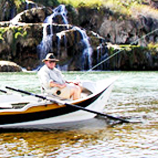
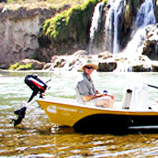
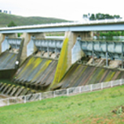

SOURCE, STORE, SUPPLY
We manage more than $9 Billion of
traditional and climate-resilient water supply asserts to ensure a
consistent, high-quality supply for the people of south east
queensland. These assets include:
- 26 DAMS AND 47 WEIRS
- 46 WATER TREAMENT PLANTS
- A 600-KILOMETRE BULK SUPPLY PIPELINE NETWORK
- THE GOLD COAST DESALINATION PLANT & THE WESTERN CORRIDOR RECYCLED WATER SCHEME
- ASSOCIATED PUMP STATIONS AND BALANCE TANKS. AND SOME OUR OTHER MAJOR OPERATIONAL
- IRRIGATION CUSTOMERS
- PLANNING AND DEMAND MANAGEMENT
- RECREATION



